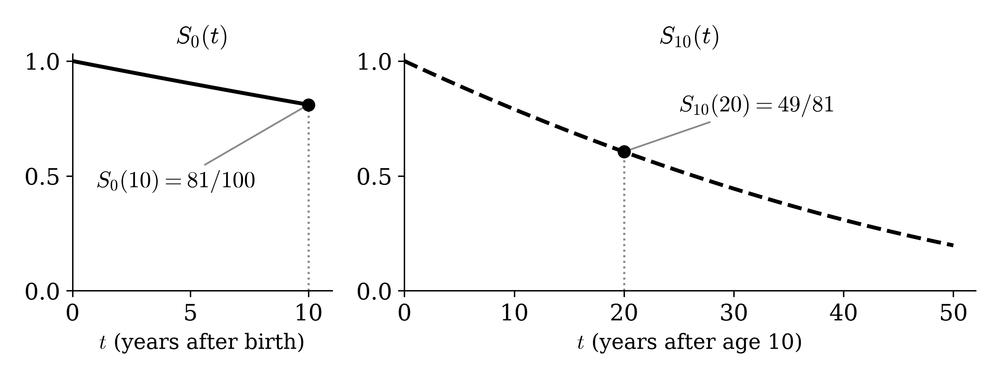
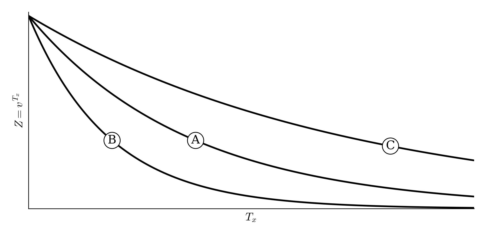
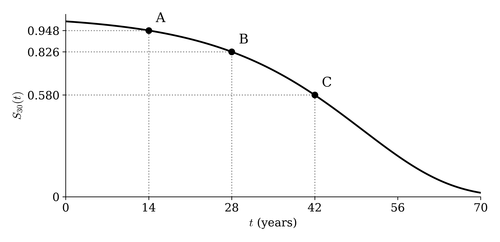
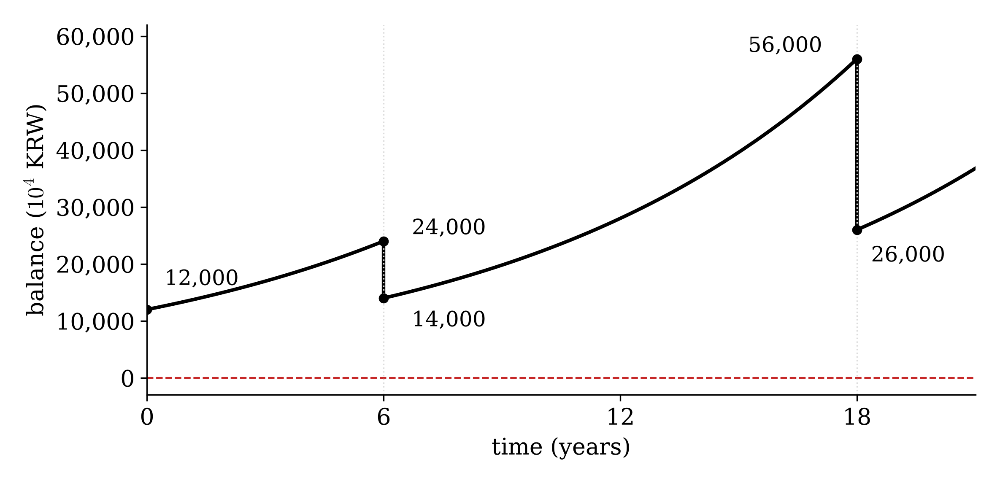
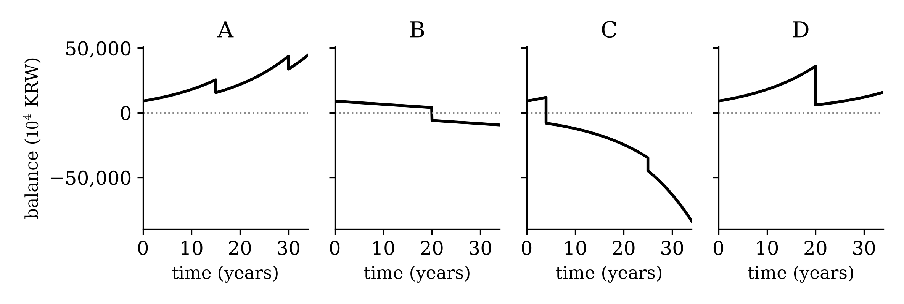
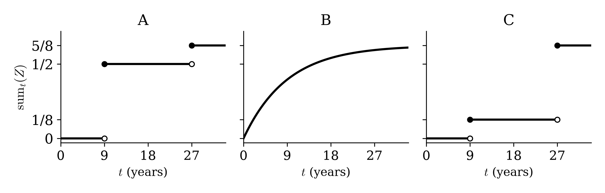

09wk-2: 중간고사
※ 파산: 받은 보험료를 이자로 불리면서 보험금을 모두 준 뒤에 남은 돈(잔고)이 음수인 것을 말한다. 잔고가 딱 0 이면 파산이 아니다.
문제1
50세인 사람의 생존함수가 아래와 같다.
\[ S_{50}(t) = \begin{cases} 1 - t/50 & \quad 0 \le t < 50 \\ 0 & \quad t \ge 50 \end{cases} \]
다음 확률을 구하라. 구할 수 없으면 “구할 수 없음”이라고 써라.
(a) 50세인 사람이 70세 전에 죽을 확률
(b) 60세인 사람이 80세를 넘겨 살 확률
(c) 45세인 사람이 80세를 넘겨 살 확률
(d) 50세인 사람이 60세와 75세 사이에 죽을 확률
문제2
아래 왼쪽은 갓 태어난 사람의 생존함수 \(S_0(t)\), 오른쪽은 같은 \(S_0\) 에서 나온 10세인 사람의 생존함수 \(S_{10}(t)\) 다. 그림에 적힌 두 값으로 \(S_0(30)\) 을 구하라.

문제3
다음 중 옳은 것을 모두 고르라. (보험금은 \(S\) 다.)
① EPV 를 보험료로 받으면 회사가 파산할 확률은 0 이다.
② \(T_x\) 가 클수록 \(Z = v^{T_x}\) 가 크다.
③ \(S\,\mathrm{E}[Z]\) 를 보험료로 받으면 회사의 손익은 평균적으로 0 이다.
④ EPV 는 \(S\,v^{\mathrm{E}[T_x]}\) 처럼 \(Z = v^{T_x}\) 의 \(T_x\) 자리에 \(\mathrm{E}[T_x]\) 를 대입해서 알 수 있다.
문제4
\((x)\) 의 남은 수명 \(T_x\) 가 확률 \(\tfrac14\) 로 9년, \(\tfrac12\) 로 18년, \(\tfrac14\) 로 27년이다. 이자율은 \(i = 0.08\) 이고 \(Z = v^{T_x}\) 다. (\((1.08)^{9} \approx 2\))
(a) \(\mathrm{E}[Z]\) 를 구하라.
(b) \(\mathrm{E}[T_x]\) 와 \(v^{\mathrm{E}[T_x]}\) 를 구하라.
(c) 보험금이 1원이다. 회사의 손익이 평균적으로 0 이 되게 하려면, (a) 의 \(\mathrm{E}[Z]\) 와 (b) 의 \(v^{\mathrm{E}[T_x]}\) 둘 중 무엇을 보험료로 받아야 하는가?
문제5
아래는 \(Z = v^{T_x}\) 를 \(T_x\) 에 대해 그린 것이다. 세 곡선 A, B, C 는 이자율이 4.4%, 9%, 19% 인 경우 중 하나씩이다. (\((1.044)^{16} \approx 2\), \((1.09)^{8} \approx 2\), \((1.19)^{4} \approx 2\))

(a) 이자율이 가장 낮은 곡선은 어느 것인가?
(b) 곡선 A 의 이자율에서 어떤 사람에게 보험료로 0.25 (보험금 1원 기준) 를 받았다. 회사가 이 사람에게서 손해를 보는 \(T_x\) 의 구간을 써라.
문제6
\((x)\) 의 남은 수명이 확률 \(\tfrac12\) 로 12년, \(\tfrac12\) 로 36년이다. 죽는 순간 1억을 준다. 이자율은 \(i = 0.06\) 이다. (\((1.06)^{12} \approx 2\))
(a) \(10^8 \times \mathrm{E}[Z]\) 를 보험료로 받으면 이 한 사람에게서 회사가 파산할 확률은 얼마인가?
(b) 파산할 확률을 0 으로 만들려면 보험료를 최소 얼마로 받아야 하는가?
(c) (b) 의 보험료를 받으면 이 사람이 36년 뒤에 죽었을 때 회사는 얼마를 남기는가? (36년 뒤 시점의 금액으로.)
문제7
30세인 사람 한 명에게 보험금 1억인 보험을 판다. 이자율은 \(i = 0.05\) 이다. (\((1.05)^{14} \approx 2\)) 아래는 이 사람의 생존함수 \(S_{30}(t)\) 다. 점 A, B, C 는 곡선 위에서 각각 \(t = 14\), \(t = 28\), \(t = 42\) 인 점이다.

(a) 이 사람 한 명에게서 회사가 파산할 확률을 \(0.174\) 로 맞추려고 한다. 보험료를 얼마 받아야 하는가?
(b) 보험료로 1,250만원을 받으면 \(P(1+i)^u = S\) 인 \(u\) 는 약 42년이다(점 C). 이때 회사가 파산할 확률은 그림에서 무엇인가?
① 점 C 의 높이
② 1 에서 점 C 의 높이를 뺀 것
③ 점 B 의 높이에서 점 C 의 높이를 뺀 것
문제8
남은 수명이 확률 \(\tfrac12\) 로 7년, 확률 \(\tfrac12\) 로 21년인 사람 2명을 서로 독립으로 받는다. 보험금은 1억, 이자율은 \(i = 0.1\) 이다. (\((1.1)^{7} \approx 2\)) 한 사람당 보험료는 정확히 EPV \(S\,\mathrm{E}[Z]\) (약 3,125만원) 이다.
(a) 두 사람 중 정확히 한 사람만 7년에 죽을 확률은 얼마인가?
(b) (a) 처럼 죽으면 \(\bar Z = \mathrm{sum}(Z)/2\) 는 약 얼마인가? 이때 회사는 파산하는가?
(c) 회사가 파산할 확률은 얼마인가?
문제9
서로 독립인 사람 \(N\) 명을 받는다. 한 사람의 \(Z\) 는 \(\mathrm{E}[Z] = 0.3\), \(\mathrm{V}[Z] = 0.04\) 이고, \(\bar Z = \mathrm{sum}(Z)/N\) 이다.
(a) \(N = 400\) 일 때 \(\bar Z\) 의 분포를 근사적으로 \(N(\text{평균},\ \text{분산})\) 꼴로 써라.
(b) \(\bar Z\) 의 표준편차를 \(0.005\) 로 만들려면 몇 명을 받아야 하는가?
문제10
\(\text{balance}(t)\) 는 \(t\) 시점의 잔고다.
(a) 4명을 받고 한 사람당 3,000만원을 받았다. 보험금은 1억, 이자율은 \(i = 0.12\) 이다. (\((1.12)^{6} \approx 2\)) 남은 수명은 6년 또는 18년이다. 아래는 이 회사의 잔고다. 6년에 몇 명, 18년에 몇 명이 죽었는가?

(b) 아래 넷은 (a) 와는 다른 회사들의 잔고 그래프다. 보험료를 처음에 한 번만 받고 죽을 때 보험금을 주는 한(\(i > 0\)), 나올 수 없는 것은 어느 것인가?

(c) 2명을 받았는데 한 명은 9년에, 다른 한 명은 27년에 죽었다. 이자율은 \(i = 0.08\) 이다. (\((1.08)^{9} \approx 2\)) \(\mathrm{sum}_t(Z)\) 는 \(t\) 시점까지 죽은 사람들의 \(Z\) 만 더한 것이다. \(\mathrm{sum}_t(Z)\) 의 그래프로 알맞은 것은 A, B, C 중 어느 것인가?

문제11
남은 수명이 확률 \(\tfrac{3}{10}\) 으로 20년, \(\tfrac{7}{10}\) 로 60년인 사람 \(N = 5\) 명을 서로 독립으로 받고, 한 사람당 보험료 \(P\) = 3,000만원을 받았다. 보험금은 1억, 이자율은 \(i = 0.035\) 이다. (\((1.035)^{20} \approx 2\))
(a) 파산하는 사건을 \(\bar Z > c\) 꼴로 쓸 때 \(c\) 를 \(P\) 와 \(S\) 로 나타내고, 그 값을 구하라.
(b) 20년에 죽는 사람 수에 따른 \(\bar Z\) 를 바르게 적은 표를 고르라.
①
| 20년에 죽는 사람 수 | 0 | 1 | 2 | 3 | 4 | 5 |
|---|---|---|---|---|---|---|
| \(\bar Z\) | \(1/8\) | \(1/5\) | \(11/40\) | \(7/20\) | \(17/40\) | \(1/2\) |
②
| 20년에 죽는 사람 수 | 0 | 1 | 2 | 3 | 4 | 5 |
|---|---|---|---|---|---|---|
| \(\bar Z\) | \(1/2\) | \(17/40\) | \(7/20\) | \(11/40\) | \(1/5\) | \(1/8\) |
(c) 20년에 몇 명 이상 죽으면 파산하는가?
(d) 같은 사람들을 이번에는 몇 명을 받든 한 사람당 6,000만원씩 받기로 했다. 회사가 파산할 확률은 얼마인가?
문제12
서로 독립이고 같은 생존함수를 따르는 사람을 \(N\) 명 받는다(보험금 1억, 이자율 \(i > 0\)). 남은 수명은 하나의 값으로 정해져 있지 않다. \(N\) 이 커질수록 파산할 확률은 어디로 수렴하는가?
(a) 한 사람당 EPV 만큼 받을 때
(b) 한 사람당 EPV 의 1.01 배를 받을 때
(c) 한 사람당 EPV 의 0.99 배를 받을 때
문제13
남은 수명이 확률 \(\tfrac15\) 로 10년, 확률 \(\tfrac45\) 로 30년인 사람 3명을 서로 독립으로 받는다. 보험금은 1억, 이자율은 \(i = 0.072\) 이고 (\((1.072)^{10} \approx 2\)), 한 사람당 EPV 를 받는다. 아래 표의 case 는 (10년 시점 사망 수) \(\cdot\) (30년 시점 사망 수) 이고, 남은 돈은 30년 시점에 모든 보험금을 준 뒤의 잔고다.
| case | 확률 | \(\mathrm{sum}(Z)\) | 남은 돈의 부호 |
|---|---|---|---|
| \(0 \cdot 3\) | \(64/125\) | ㉠ | ㉢ |
| \(1 \cdot 2\) | \(48/125\) | \(3/4\) | ㉣ |
| \(2 \cdot 1\) | \(12/125\) | \(9/8\) | ㉤ |
| \(3 \cdot 0\) | \(1/125\) | ㉡ | ㉥ |
(a) 한 사람당 EPV 는 얼마인가?
(b) 표의 ㉠, ㉡ 에 들어갈 값을 각각 구하라.
(c) 표의 ㉢, ㉣, ㉤, ㉥ 에 들어갈 부호를 \(+\), \(-\), \(0\) 중에서 각각 쓰라.
(d) 회사가 파산할 확률은 얼마인가?